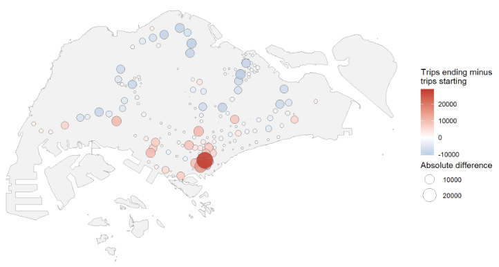
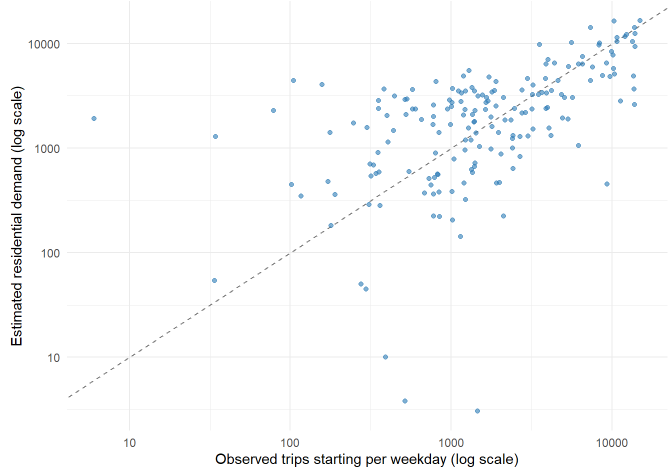
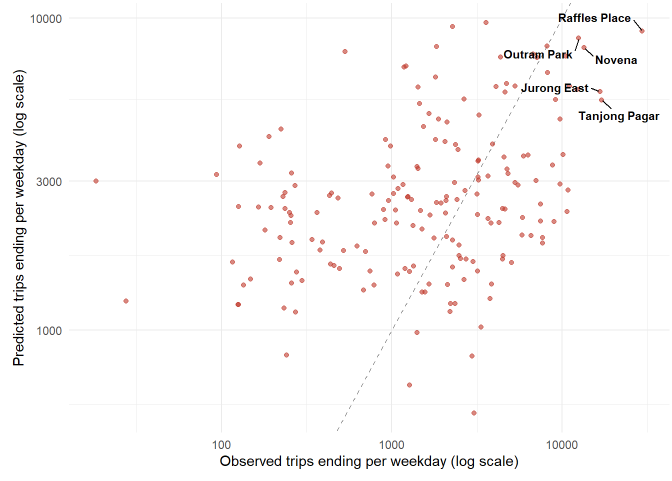
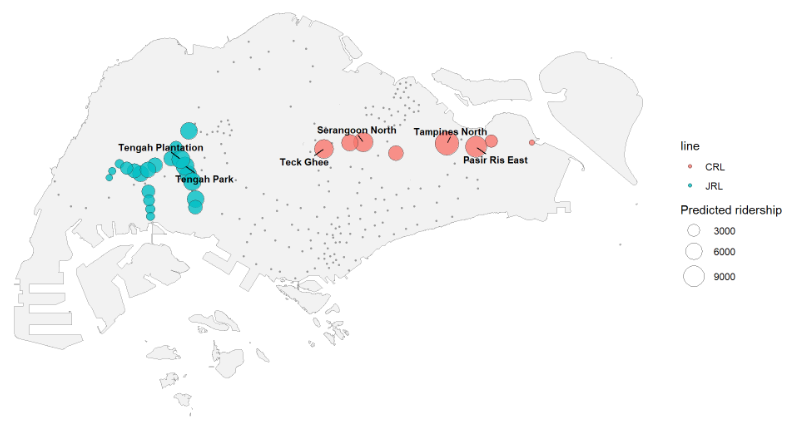
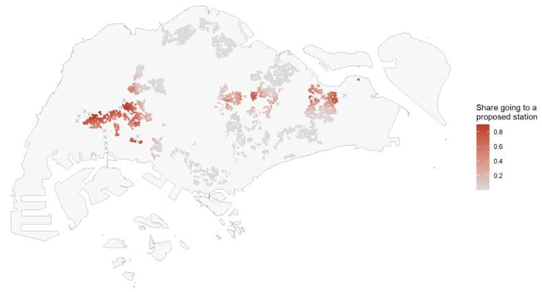
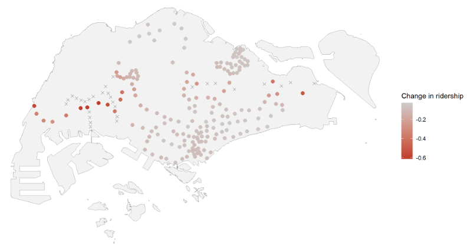
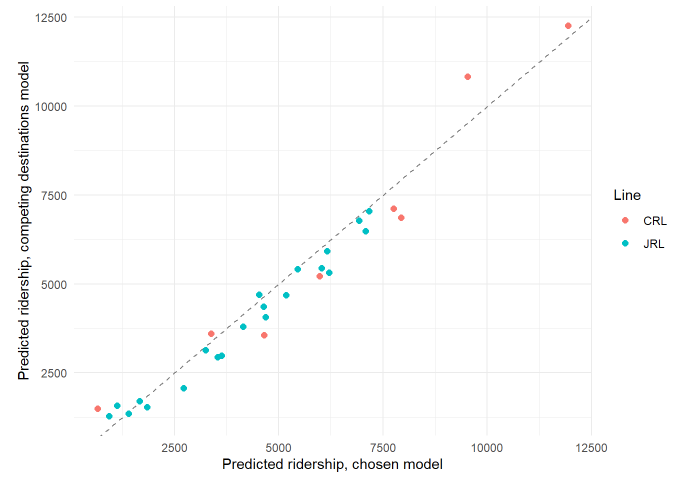

Station Ridership and Market Area Impact of the Jurong Region and Cross Island Lines
Lin Yuxuan
Content Page
Overview
Research Questions
Study Area & Data
Analytical Approach
Model Performance
Key Finding 1: The New Stations Are Ordinary in Size
Key Finding 2: Market Areas Shift in Three Places
Key Finding 3: Every Existing Station Loses Riders
Limitations
Conclusion & Implications
1. Overview
The MRT has been the backbone of public transport in Singapore since 1987, carrying 3.49 million trips a day in 2025
The Land Transport Master Plan 2040 targets a 360 km rail network and 8 in 10 households within a 10-minute walk of a station, both by 2030
Stations are sometimes built ahead of demand, and some open years after their station boxes are completed
Two lines are being delivered: the Jurong Region Line (24 stations) and Cross Island Line Phase 1 (12 stations)
Knowing which new stations will be busy, and which existing stations lose riders, supports these decisions before the lines open
2. Research Questions
Which attraction variables, and which distance decay, explain station-level ridership on the existing network?
Does the calibrated model outperform reference models, namely equal market shares and a Huff model with fixed parameters?
What ridership is predicted for each proposed station, and how does it compare with existing stations on the same lines?
Which existing stations lose market share and ridership to the new stations, and where are the losses concentrated?
3. Study Area & Data
Study area
213 stations: 184 existing, 29 new
Study period
Weekday morning peak, 7 and 8 am
July to September 2026
570,993 trips per weekday
Data
LTA DataMall, Master Plan 2025
HDB footprints, bus stops, OpenStreetMap facilities
800 m catchment per station

Blue stations send riders out, red stations receive them
4. Analytical Approach
The trips starting at a station are divided among all other stations by attraction and distance, using the Huff and Multiplicative Competitive Interaction (MCI) models
Nine models compared on 33,672 pairs
Chosen: bus stops, education, retail, health and the distance to the city centre, with an exponential decay of 0.109 per km
New stations have no riders to observe, so 13,436 HDB buildings are shared among competing stations

Estimated residential demand against observed trips starting
5. Model Performance
The chosen model explains 22% of the variation in arrivals, against 4% for equal shares and under 1% for a calibrated Huff model
It holds up out of sample: five-fold validation by origin gives the same 22%
Estimated residential demand correlates 0.744 with observed trips starting, against 0.39 for a simple catchment count
But predictions are pulled towards the middle: the quietest quarter of stations is over-predicted about nine times, the busiest under-predicted by half

Predicted against observed arrivals, 184 existing stations
6. Key Finding 1: The New Stations Are Ordinary in Size
140,169 trips per weekday, about 12% of the network’s ridership today
Jurong Region Line: 21 stations, 88,333 trips. Cross Island Line: 8 stations, 51,835 trips
Busiest: Tampines North (11,936 trips). Quietest: Aviation Park (656)
Median new station 4,654 trips, against 4,803 at the existing stations

Predicted ridership of the 29 proposed stations
7. Key Finding 2: Market Areas Shift in Three Places
2,112 HDB buildings, holding 16.1% of the island’s HDB footprint area, move closer to a new station
Three groups: Tengah and Jurong, the centre, and Tampines and Pasir Ris
Pasir Ris loses 330 buildings. Tampines North gains 275
Elsewhere little changes: the median building sends 1% of its area to a new station

Red buildings move to a new station
8. Key Finding 3: Every Existing Station Loses Riders
Ridership at the existing stations falls from 1,141,986 to 1,001,817 trips per weekday
The median station loses 7.9%, and no station gains
51 stations lose more than a tenth of their ridership, and 16 lose more than a quarter
Deepest in the west, along the Jurong Region Line: Lakeside −61%, Pioneer −60%, Boon Lay −60%
Least affected in the north: Admiralty, Khatib and Sembawang, each under 3%

Change in ridership at existing stations. Crosses mark the proposed stations
9. Limitations
No data on jobs, which draw most morning trips. The distance to the city centre is a rough substitute
Residents measured by HDB footprints only, and distances measured in straight lines
Predictions are pulled towards the middle, errors cluster in space, and total trips are held constant
A competing destinations model fits better: it agrees on the new stations (0.979) but gives a different median loss (−4.3% against −7.9%)

Predicted ridership under the two models
10. Conclusion & Implications
Conclusions
The 29 new stations are predicted 140,169 trips per weekday, and the median one is an ordinary station in size
Their riders come largely from catchments the network already serves: a sixth of HDB footprint area changes market area
Every existing station loses ridership, with the deepest losses in the west
Implications
Capacity should be considered first for Tampines North, Pasir Ris East and Serangoon North, the three busiest of the new stations
Bus services in the west warrant review, where the Jurong Region Line draws on catchments the existing line serves
The ridership predictions are the firmer finding; the impact figures are indicative